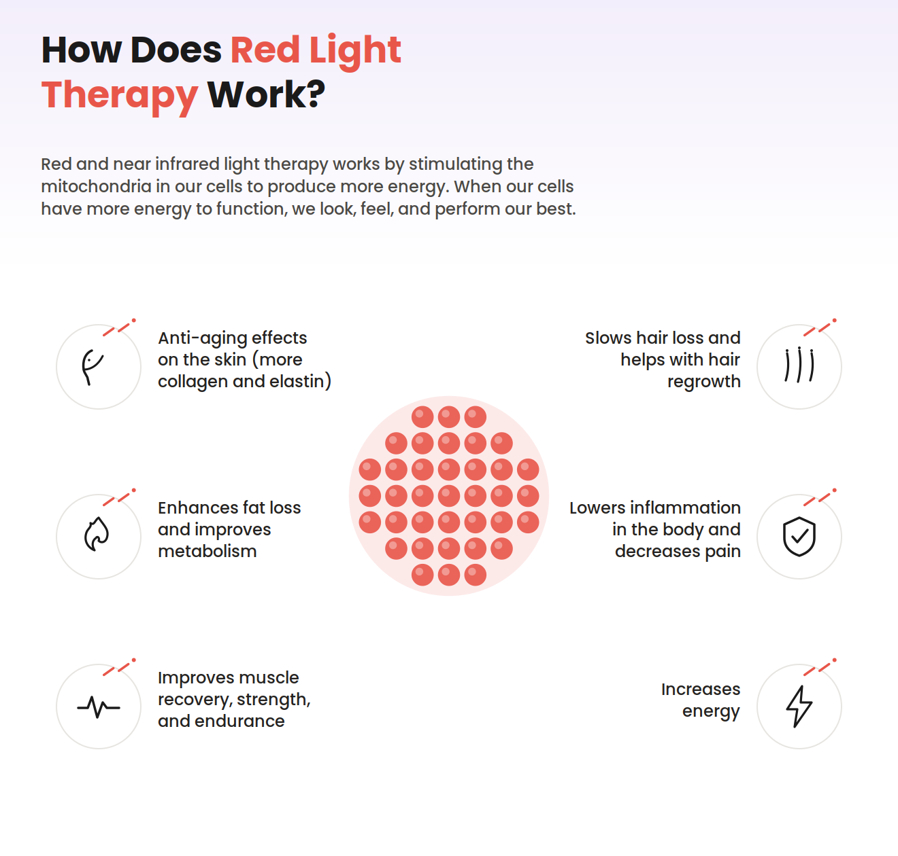
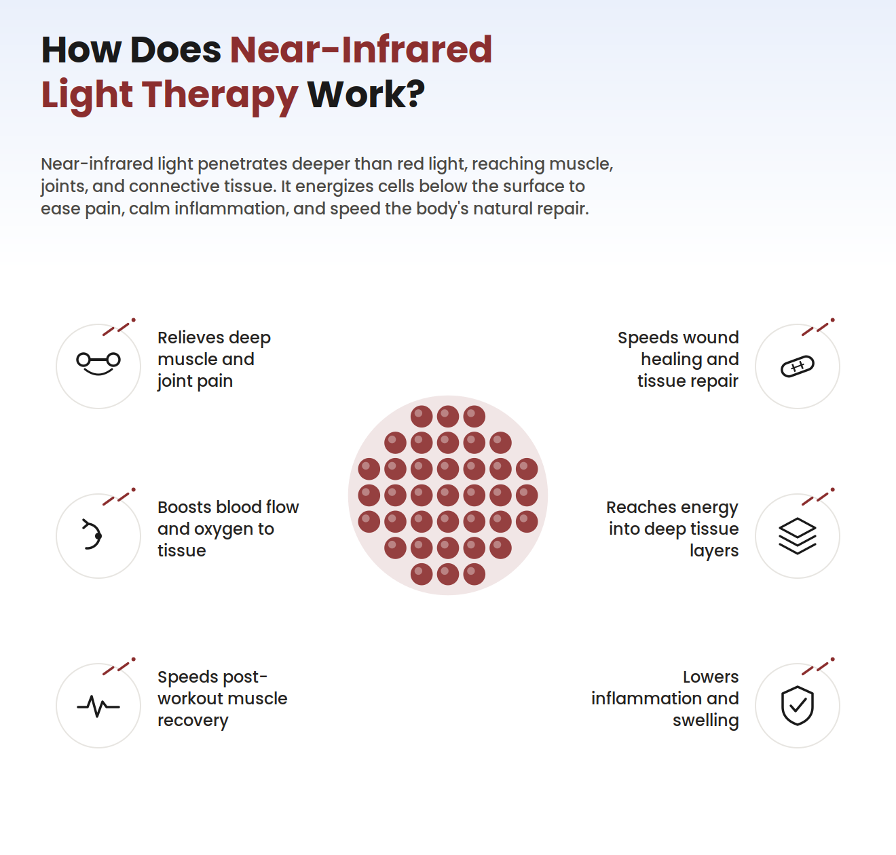

Healing, Illuminated.
Non-invasive polarized light therapy that supports faster recovery from injury, soft-tissue damage, and persistent pain — as a complement to your medical care.
Light Wavelengths
Recovery Programmes
+
Years of Research

Free First Assessment
At your consultation
Book via WhatsApp or emailAbout Iridescence
Iridescence is a premium polarized light therapy clinic in South Africa. We specialize in non-invasive treatments for injury recovery, chronic pain, and tissue healing — combining advanced photobiomodulation technology with personalized care. Our mission is to help you heal deeper and recover faster, without surgery or medication.
Did you know? Modern light therapy research traces back to NASA plant-growth experiments in the 1980s — scientists noticed red light didn't just help plants grow faster, it also seemed to speed up wound healing in the people handling them. That accidental discovery helped kick off decades of research into what's now called photobiomodulation.

Complementary Care
Works alongside — never instead of — your medical team
Discover Light Therapy
Light therapy isn't one thing — it's a family of treatments, each using a different part of the light spectrum to do a different job in the body
Red Light Therapy
Visible red light reaches the dermis — the layer just beneath the skin's surface. It's the most commonly used wavelength for surface-level healing, working directly on the cells responsible for collagen and tissue repair.

Near-Infrared Therapy
Invisible to the eye, near-infrared light travels far deeper — down into muscle and joint tissue. This is the wavelength range most associated with pain relief and deep tissue recovery.

Blue Light Therapy · 400–500nm
Blue light barely penetrates past the skin's surface — which is exactly the point. It has natural antibacterial and anti-inflammatory effects, making it useful for surface-level skin concerns.
- Surface skin conditions
- Antibacterial support
- Calming inflammation
Polarized Full-Spectrum · 400–2000nm
Our signature approach — a broad range of wavelengths, visible and infrared, in a single non-laser, non-thermal treatment that works across multiple tissue depths at once.
- Whole-area injury treatment
- Surface + deep tissue support
- General recovery & pain relief
Skin Penetration Depth
Each wavelength reaches a different depth in the body — that's how we match the light to your specific injury or condition.
- Blue: ~0.5–1mm · surface layer
- Red: ~1–2mm · dermis layer
- Near-Infrared: ~5–10mm · muscle & joint
What We Treat
From acute injuries to long-standing pain, each programme is matched to what your body needs — non-invasive, drug-free, and always alongside your medical care

Injury & Wound Recovery
Polarized light therapy supports the body's own repair process after cuts, sprains, and soft-tissue injuries. Sessions are non-invasive and drug-free, encouraging circulation and cellular activity in the area so the tissue can settle and rebuild more comfortably.
Explore Our Services
Red Light
Learn how Red Light Therapy works
Infrared
Learn how Infrared Light Therapy works
Blue Light
Learn how Blue Light Therapy works
Polarized Full-Spectrum
Learn how Polarized Full-Spectrum Light Therapy worksBacked by Research
Photobiomodulation is an active area of clinical research — here are peer-reviewed sources on light therapy for tissue repair and injury recovery
Low-level laser therapy for acute tissue injury and sport recovery
PMC · Journal of Functional Morphology & Kinesiology. A review of clinical literature on light therapy supporting recovery after acute injury and intense training.
- May support faster soft-tissue recovery
- Wavelength, dose and timing matter
Red light therapy and wound closure in skin cell models
PMC · Cellular Wound Healing Research. Laboratory research examining how specific red-light wavelengths influence cell proliferation and wound closure.
- Certain doses encourage cell proliferation
- Points to an energy-based mechanism
Comparing light-based approaches to wound healing
PMC · Systematic Review. A systematic review comparing different light-emitting technologies used in cutaneous wound healing.
- Several light methods show promise
- Calls for standardised protocols
An overview of photobiomodulation
PMC · Wellman Center for Photomedicine, Harvard. A widely cited overview of how low-level light therapy affects wound healing and tissue repair.
- Light boosts cellular energy & signalling
- Correct dosing is essential
Photobiomodulation across medical disciplines
PMC · Cross-Disciplinary Review. A broad review of how light therapy is used across wound care, pain management, and rehabilitation.
- Low-risk, non-invasive complement
- A growing field of clinical research
A note on the evidence
Iridescence provides light therapy as a complementary treatment. Always consult a medical professional for diagnosis and treatment of injuries.
- Studied since the 1960s
- Plain-language summaries by Iridescence
Ready to begin your recovery?
Book a consultation and we'll help you understand whether light therapy fits your recovery plan — with a free assessment to match you to the right treatment. Non-invasive, drug-free, and coordinated with your care team.

1. Applied
A polarized light source is positioned over the treatment area and delivered at a clinically calibrated wavelength and dose.
2. Absorbed
Cells in the tissue absorb the light energy, prompting the mitochondria to increase production of cellular energy (ATP).
3. Repair Supported
Greater cellular activity supports circulation, helps calm inflammation, and encourages the body's natural tissue repair.
4. Relief
Sessions are painless, non-thermal, and drug-free — with many clients reporting reduced discomfort over a treatment course.
Questions before you book?
We're happy to talk through whether light therapy fits your recovery plan — your first assessment is free, and we can coordinate with your treating physician or physiotherapist.